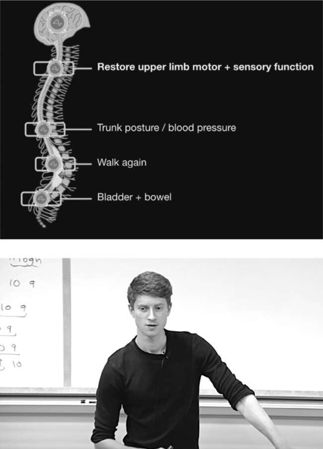

Phương pháp chữa trị
Khi Musk chuyển đến Texas, theo sau là Shivon Zilis, ông quyết định mở một cơ sở Neuralink ở Austin bên cạnh cơ sở ở Fremont, California. Văn phòng và phòng thí nghiệm ở Austin nằm trong một tòa nhà trung tâm thương mại với biển hiệu "Hatchet Alley" trên cửa. Trước đây, nơi này từng là địa điểm ném rìu và chơi bowling. Zilis đã cải tạo lại nơi này bao gồm không gian làm việc mở, phòng thí nghiệm, phòng họp kính và một quầy cà phê dài ở trung tâm. Cách đó vài dặm là một loạt chuồng trại cho lợn và cừu được sử dụng trong các thí nghiệm.
Trong một chuyến thăm các chuồng lợn vào cuối năm 2021, Musk tỏ ra mất kiên nhẫn với tiến độ công việc tại Neuralink. Họ đã cấy chip vào não một con khỉ và dạy nó chơi Pong bằng thần giao cách cảm, nhưng cho đến nay điều đó chủ yếu giúp Neuralink có nhiều lượt xem trên YouTube hơn là thay đổi nhân loại. "Mọi người, điều này hơi khó giải thích theo cách thực sự thu hút họ," ông nói khi họ đi dạo xung quanh. "Một người bị liệt có thể một ngày nào đó dùng tâm trí để di chuyển con trỏ trên máy tính, và điều đó khá thú vị, đặc biệt là đối với những người như Stephen Hawking. Nhưng như vậy vẫn chưa đủ. Thật khó để khiến hầu hết mọi người hào hứng với điều đó."
Đó là lúc Musk bắt đầu thúc đẩy ý tưởng sử dụng Neuralink để cho phép người bị liệt thực sự sử dụng lại chân tay của họ. Một con chip trong não có thể gửi tín hiệu đến các cơ liên quan, bỏ qua bất kỳ sự tắc nghẽn tủy sống hoặc rối loạn chức năng thần kinh nào. Ngay khi trở lại Hatchet Alley từ chuồng lợn, ông đã tập hợp đội ngũ hàng đầu của mình ở Austin, cùng với các đồng nghiệp ở Fremont gọi điện tham gia, để công bố nhiệm vụ bổ sung mới này. "Giúp người ngồi xe lăn đi lại được, mọi người sẽ hiểu ngay lập tức," ông nói. "Đó là một ý tưởng mạnh mẽ, một điều táo bạo. Và là một điều tốt."
Hàng tuần, Musk đều đến phòng thí nghiệm Neuralink để họp đánh giá tiến độ. Vào tháng 8/2022, trong một buổi họp như vậy, kỹ sư trưởng Jeremy Barenholtz đang chờ ở quầy cà phê. Anh tốt nghiệp thạc sĩ hệ thống khoa học máy tính tại Stanford một năm trước đó, nhưng với mái tóc đỏ hoe và bộ râu lưa thưa, trông anh vẫn như một học sinh trung học tham gia hội chợ khoa học. "Elon thấy rằng việc điều khiển máy tính bằng suy nghĩ rất hay, nhưng nó không tạo ra được sự cộng hưởng cảm xúc mạnh mẽ như việc giúp người liệt đi lại", anh nói. "Vì vậy, chúng tôi đã tập trung vào kế hoạch đó." Anh ấy giải thích cho tôi về các phương pháp kích thích cơ khác nhau và chia sẻ lý do tại sao anh ấy tin rằng tín hiệu trong não được truyền bởi sự khuếch tán hóa học của các phân tử tích điện chứ không phải sóng điện từ, như lý thuyết thông thường.
Sau khi Musk gửi xong email và đăng tweet trên điện thoại, hàng chục kỹ sư trẻ đã tập trung trong phòng họp. Tất cả bọn họ, bao gồm cả Zilis, đều mặc áo phông đen, giống như Musk vẫn thường mặc. Barenholtz đưa cho mọi người xem một mẫu hydrogel giống như mô mềm của vỏ não và chiếu một đoạn video về hai con lợn thí nghiệm, tên là Captain và Tennille, đang di chuyển chân để phản ứng với các tín hiệu điện. "Chúng ta phải phân biệt được giữa phản ứng đau và kích hoạt cơ, nếu không thì đơn giản là 'Bạn có thể đi lại được, nhưng trong đau đớn'," Musk nói. "Nhưng nó cho thấy chúng ta không vi phạm các định luật vật lý khi cố gắng giúp mọi người đi lại được, điều này sẽ thật sự phi thường, như một phép màu."
Khi Musk hỏi họ có thể hướng tới những điều kỳ diệu nào khác, Barenholtz đề xuất kích thích thính giác và thị giác - nói cách khác, giúp người điếc nghe được và người mù nhìn thấy được. "Dễ nhất là chữa điếc bằng cách kích thích ốc tai," anh nói. "Thị giác thì rất thú vị. Để có được thị lực trung thực cao, bạn cần rất nhiều kênh."
"Chúng ta có thể cho mọi người thị lực siêu việt, bạn biết đấy?", Musk nói thêm. "Bạn muốn nhìn thấy tia hồng ngoại? Tia cực tím? Hay sóng radio hoặc radar? Phải, cái đó rất tuyệt để tăng cường."
Rồi anh bật cười. "Tôi đang xem lại phim Life of Brian," anh nói, đề cập đến bộ phim của Monty Python. Anh kể lại cảnh một người ăn xin phàn nàn rằng Chúa Giê-su đã chữa khỏi bệnh phong cho anh ta, khiến anh ta khó kiếm sống bằng nghề ăn xin hơn: "Tôi đang nhảy lò cò, lo việc của mình, đột nhiên, anh ta xuất hiện, chữa khỏi cho tôi! Phút trước tôi còn là một người phong cùi có nghề nghiệp, phút sau kế sinh nhai của tôi đã biến mất. Thậm chí không nói một lời nào! 'Anh đã được chữa khỏi, anh bạn.' Đồ kẻ hay làm việc tốt."
Bài thuyết trình
Cuối tháng 9, Musk lại sốt ruột. Anh đã thúc giục Zilis và Barenholtz tổ chức một sự kiện công khai để trình bày tiến độ của họ, nhưng họ nói rằng họ chưa sẵn sàng. Tại một trong những buổi họp đánh giá hàng tuần, mặt anh tối sầm lại. "Nếu chúng ta không tăng tốc, chúng ta sẽ không đạt được nhiều thành tựu trong đời," anh cảnh báo. Sau đó, anh ấn định ngày thuyết trình: Thứ Tư, ngày 30 tháng 11. Hóa ra, đó cũng là ngày anh đến thăm Tim Cook tại Apple.
Khi Musk đến vào tối hôm đó, có hai trăm chiếc ghế được đặt tại cơ sở Fremont của Neuralink. Một trong những người dẫn podcast yêu thích của Musk, Lex Fridman, đã đến tham dự sự kiện, cũng như Justin Roiland của chương trình truyền hình hoạt hình Rick and Morty. Ba chàng lính ngự lâm - James, Andrew và Ross - không được mời, nhưng họ đã có thể vào bằng cửa sau.
Musk muốn bài thuyết trình thể hiện cả tham vọng cuối cùng lẫn mục tiêu trước mắt của mình. “Động lực chính của tôi với Neuralink,” ông nói với khán giả, “là tạo ra một thiết bị nhập-xuất tổng quát có thể kết nối với mọi khía cạnh của não bộ.” Nói cách khác, đây sẽ là sự kết hợp hoàn hảo giữa con người và máy móc, từ đó ngăn chặn trí tuệ nhân tạo vượt khỏi tầm kiểm soát. “Ngay cả khi AI có thiện chí, làm sao chúng ta đảm bảo mình vẫn kiểm soát được nó?”
Sau đó, ông tiết lộ các nhiệm vụ ngắn hạn mới mà ông đã đặt ra cho Neuralink. “Đầu tiên là khôi phục thị lực,” ông nói. “Ngay cả khi một người sinh ra đã mù, chúng tôi tin rằng mình có thể giúp họ nhìn thấy.” Tiếp theo, ông nói về chứng liệt. “Tuy có vẻ như phép màu, nhưng chúng tôi tự tin rằng có thể khôi phục hoàn toàn chức năng cơ thể cho người bị đứt tủy sống.” Bài thuyết trình kéo dài ba tiếng. Ông ở lại đến tận 1 giờ sáng, tiệc tùng với các kỹ sư của mình. Sau này ông nói, đó là khoảng thời gian nghỉ ngơi đáng hoan nghênh khỏi "bãi chiến trường" Twitter.

Một slide trình bày mục tiêu và Jeremy Barenholtz